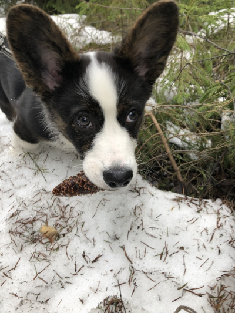

Niilo syntyi maailmaan 13.12.2018 Asikkalassa. Niilo kotiutui uuteen perheeseen 16.2.2019. Niilo on elämänsä aikana päässyt kohtamaan monia ystäviä & päässyt myös kokemaan ulkomaanmatkoja.
Niilon lempiherkut ovat:
- Käpy (niin kuin kuvasta voi huomata)
- Juusto
- Porkkana
- Kurkku